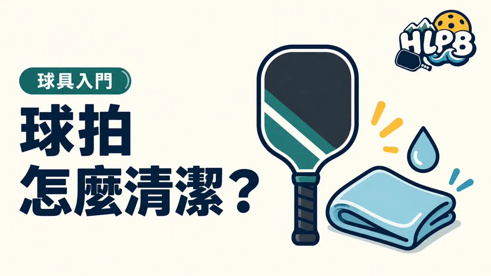

球拍髒了，先看品牌的保養方式。Selkirk 對一般拍面的建議，是用微濕、不掉毛的布輕擦拍面與護邊，避免家用清潔劑留下殘留。
打完擦拭汗濕的握把，等乾燥後再收好；不要浸水，也別長時間放在高溫車內。碳纖維清潔塊並非每種拍面都適用，使用前先確認材質與品牌說明。
打完球後，按部位處理比較清楚
先查看原廠對該拍面的清潔說明，再決定用品。拍面有球屑、握把有汗水、邊框有灰塵，是不同的清潔需求；不要因為拍面髒，就把整支球拍一起浸洗。
| 部位 | 日常整理重點 | 完成後確認 |
|---|---|---|
| 拍面與護邊 | 依原廠方式輕擦，先移除表面髒污 | 沒有清潔殘留，也沒有為清潔而新增磨痕 |
| 握把 | 擦去汗水，再以乾布處理表面水分 | 乾燥後再收納，檢查是否已需更換握把布 |
| 拍套與球袋 | 依各用品洗標或說明整理 | 內部乾燥，不把濕物和球拍長時間悶在一起 |
碳纖維清潔塊，不是看到碳纖維就能用
先分辨拍面實際結構與表面處理，再核對清潔塊的適用說明。原廠若只允許特定方法，就依該型號處理。『清得更乾淨』不是加大摩擦、使用溶劑或磨掉表面的理由；也不要用清潔嘗試恢復一支已出現結構異常的拍。
清潔後還是覺得不對，接下來查什麼？
將外觀髒污、正常使用痕跡與擊球異常分開記錄。若有鬆動、裂痕或持續異音，保留照片和購買資料，向原購買通路詢問。清潔是保養程序，無法藉由擦拭判定內芯是否完好，也不能代替維修。
參考：Selkirk 球拍保養指南。
最後查證：2026-10-19｜資料來源：Selkirk 球拍保養指南
返回文章列表